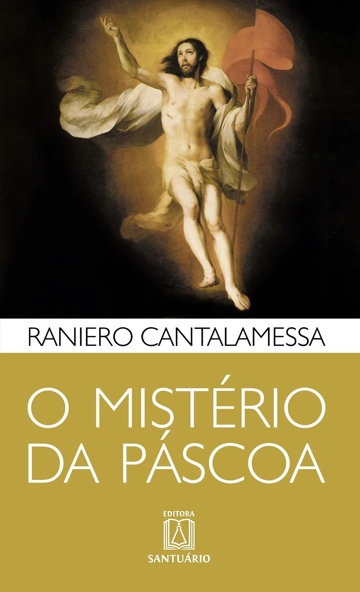

Referência de estudo
Material baseado em O Mistério da Páscoa
Este artigo tem como referência o livro O Mistério da Páscoa, de Raniero Cantalamessa.
Ver este livro na seção de livrosUma análise teológica e cristológica da passagem do “Eu” para o “Tu” à luz da soteriologia e dos concílios ecumênicos.
A reflexão teológica sobre a redenção humana encontra seu eixo central na compreensão do mistério pascal e na resolução da fratura ontológica e moral gerada pela desobediência original. A fé pascal dos cristãos fundamenta-se na crença tridimensional de que Jesus verdadeiramente morreu e ressuscitou, que o fez vicariamente pelos nossos pecados e ressurgiu para a nossa justificação, e que entregou-se por amor de forma consciente e voluntária. Para compreender a travessia do abismo que separa a criatura decaída do Criador, torna-se indispensável analisar o itinerário de Cristo, cujo ponto mais baixo e decisivo se manifesta no Horto do Getsêmani, onde a vontade humana e a vontade divina convergem no ato definitivo de amor e obediência que reverte a tragédia do Éden.
Os Fundamentos da Fé Pascal e o Cenário do Getsêmani
A Tríade da Fé Pascal
A fé pascal exige que o cristão creia, ao mesmo tempo, em três pontos fundamentais. Primeiro, na realidade histórica e transhistórica da morte e ressurreição de Jesus. Segundo, na eficácia soteriológica da morte vicária pelos pecados e da ressurreição para a justificação. Terceiro, na plena consciência e gratuidade do sacrifício: Jesus morreu sabendo o propósito, movido inteiramente pelo amor, sem coerção ou acaso. O centro dessa fé não é apenas a lembrança de um evento, mas a certeza de que, em Cristo, a história humana entrou num novo e decisivo ciclo de reconciliação com Deus.
É o que torna o Getsêmani o ponto mais baixo da passagem para o Pai. Ali, o sofrimento não é apenas físico ou emocional; ele é a expressão mais profunda da entrega voluntária do Filho ao propósito do Pai. Em Marcos 14,36, Jesus ora: “Afasta de mim este cálice; porém não o que EU quero, mas o que TU queres”. A frase revela a tensão que atravessa a própria natureza humana assumida por Cristo: a vontade humana livre, plenamente consciente, é chamada a submeter-se à vontade divina sem perder a sua autenticidade. Nesse gesto, a morte de Cristo deixa de ser trágica ou acidental para se tornar o ato supremo de liberdade, consciência e amor.
A Fundamentação Conciliar: União Hipostática e as Duas Vontades em Cristo
O Concílio da Calcedônia e a União Hipostática
O dogma calcedoniano afirma que em Cristo há uma única pessoa divina subsistente em duas naturezas perfeitas: a humana e a divina, unidas hipostaticamente sem confusão, sem mudança, sem divisão e sem separação. Isso significa que Jesus age simultaneamente como verdadeiro Homem e verdadeiro Deus. A natureza humana foi assumida de Maria; a natureza divina procede do Espírito Santo. O mistério da encarnação não consiste em uma fusão mecânica entre duas essências, mas na unidade pessoal do Verbo, que assume a nossa humanidade para a curar e redimir em profundidade.
O Concílio de Constantinopla III e a Harmonia das Vontades
O Concílio de Constantinopla III afirma dogmaticamente que Cristo possui duas naturezas e, por conseguinte, duas vontades naturais e operações correspondentes. As duas vontades — humana e divina — não se opõem competitivamente; antes, unem-se em perfeita harmonia. A vontade humana de Cristo voluntariamente se sujeita e coopera com a vontade divina. A oração no Getsêmani torna isso visível: o Filho, em sua humanidade, sente o peso do cálice, mas não se coloca acima da vontade do Pai. A sua entrega não é uma recusa da liberdade, mas o seu pleno exercício — porque a verdadeira liberdade encontra-se na obediência filial.
O Testemunho Patrístico e Dogmático
Leão Magno, na formulação recebida em Denzinger-Hünermann (DH 290-295), sintetiza com força o mistério da encarnação: a majestade assume a humildade, a força assume a fraqueza e a eternidade assume a mortalidade. A união da natureza inviolável com a passível é o caminho pelo qual Cristo cura e redime a totalidade da condição humana. A redenção não alcança apenas o corpo ou a alma separadamente; alcança o homem inteiro em sua natureza, em sua vontade e em sua condição histórica de criatura caída. A expressão “Todo inteiro no que é seu, todo inteiro no que é nosso” resume a profundidade do mistério: Cristo se faz presente na plenitude da humanidade para conduzir a humanidade à plena comunhão com Deus.
A Hermenêutica do “Eu” e do “Tu” no Diálogo do Getsêmani
Quem é o “EU” na oração de Jesus? É Jesus falando e expressando legitimamente a vontade humana livre que Ele assumiu em sua carne. Quem é o “TU”? É a vontade trinitária compartilhada perfeitamente por Jesus com o Pai. A oração não é uma divisão de identidade, nem uma espantosa rivalidade entre duas vontades em conflito. É antes o ato de perfeita comunhão entre a vontade humana assumida e a vontade divina eterna. O “Sim” de Cristo no Getsêmani constitui o supremo “ato humano de Deus”.
É nesse ponto que a teologia cristã vai além de uma concepção reducionista de liberdade. A liberdade autônoma, centrada no próprio “eu”, conduz à alienação e ao abismo. A liberdade verdadeira, por sua vez, consiste em reconhecer em Deus o fundamento do próprio ser e entregar-se ao amor que o torna capaz de agir conforme a verdade. A vontade humana não é anulada no Getsêmani; ela é assumida, educada e integrada na vontade do Pai em um gesto de amor consciente e obediente.
Pulando o Abismo: Do Éden ao Getsêmani e a Felicidade Autêntica
O Paralelo Histórico: Éden versus Getsêmani
No Éden, por um ato livre, a vontade do primeiro homem (Adão) desobedeceu a Deus, instaurando o abismo. Também num jardim — o Getsêmani —, por um ato livre, o novo homem (Jesus) retorna à perfeita obediência. O drama da humanidade atravessa duas cenas marcadas por jardins, mas com resultados opostos. Em Éden, a criatura prefere sua vontade à do Criador; no Getsêmani, o Filho do homem entrega sua vontade à vontade do Pai. A passagem do “EU” para o “TU” consagra o verdadeiro, definitivo e universal êxodo pascal da humanidade.
A Superação do Abismo e a Verdadeira Felicidade
O ser humano rompe o abismo existencial quando passa de uma existência centrada na própria vontade para uma vida fundamentada na vontade divina. Enquanto a mentalidade mundana interpreta a submissão a Deus como alienação ou perda de liberdade, a teologia cristã revela nela a chave da verdadeira felicidade. Feliz é aquele que, seguindo os passos de Jesus e capacitado pela força do Espírito Santo, submete sua vontade humana à vontade de Deus.
A oposição entre a falsa liberdade proclamada pelo mundo e a verdadeira liberdade alcançada pela obediência filial é o eixo central desta reflexão. O mundo ensina que a liberdade consiste em fazer valer o “eu” acima de tudo; o Evangelho mostra que a verdadeira liberdade nasce quando o “eu” se põe à serviço do “Tu” divino. Assim, a perfeição da felicidade humana não está na autonomia entre o céu e a terra, mas na comunhão com o Pai, no Filho e no Espírito Santo.
O “Eu” isolado conduz ao abismo; o “Tu” que salva conduz à restauração. A partir deste ponto, a história humana não se encerra em si mesma, mas abre-se para a comunhão definitiva com a Santíssima Trindade. O homem que se deixa formar por Cristo aprende que a verdadeira liberdade se encontra no gesto de entrega e que a alegria mais profunda é pertencer à vontade de Deus.
Conclusão
A travessia do abismo que separa a humanidade de Deus não se realiza por esforço autônomo ou rebeldia autossuficiente, mas através do caminho inaugurado e percorrido por Cristo. Do Éden ao Getsêmani, a história humana oscila entre a tragédia da desobediência e a glória da entrega filial. Ao assumir plenamente a nossa humanidade com todas as suas faculdades — incluindo a vontade livre —, Cristo transformou o seu “Sim” no Getsêmani no ato definitivo de reconciliação. Submeter a nossa vontade à vontade divina, impulsionados pela graça do Espírito Santo, não representa cerceamento da liberdade, mas o êxodo pascal que nos resgata dos abismos da existência e nos insere na comunhão definitiva com a Santíssima Trindade.